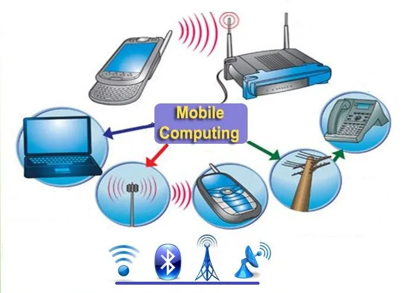

History and evolution of mobile computing

History and evolution of mobile computing
- In 1894, Marconi done experiment along with Hertzian rays and identify the waves over very long distance. Then developed the first wireless telegraph company.
- 1980–Developed first consumer Laptop.
- 1981 – Developed portable Computer by Epson.
- 1984 – First touch screen laptop was developed.
- 1990 – New portable laptop released by Apple with 640*640 display screen.
- 1992 – Released standard Windows 3.1.1 operating system
- 1993 – Developed first PDA by Apple.
- 2007 – Launched first I Phone along with touch screen.
- 2009- Launched first smart phone with Android.
- 2011 – Start evolution of Mobile Computing.